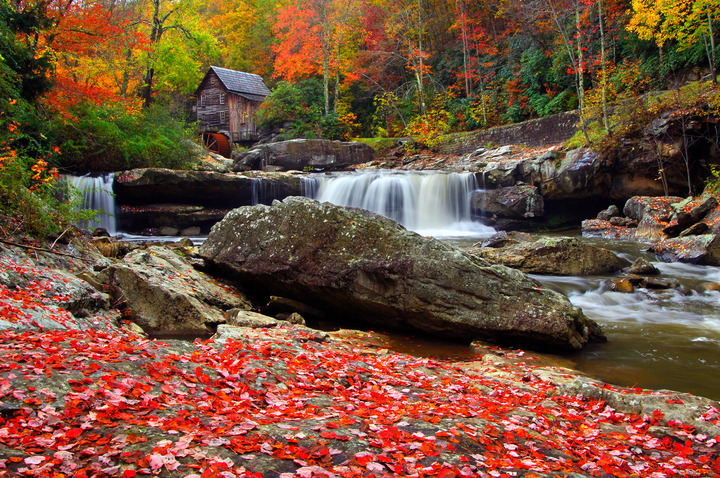
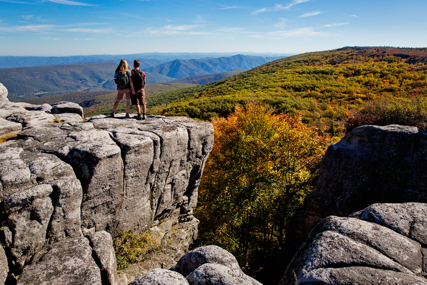

State Highlights
1863
Year Admitted to the Union
1.793 million
Population (2020 Census)
22.2%
Residents with Bachelor's Degree or Higher
4,863 ft
Elevation above sea level (Spruce Knob)
Must-Visit Destinations

New River Gorge
America's newest national park featuring the iconic 876-foot-high bridge, world-class rock climbing, and whitewater rafting adventures.
Plan Your Visit

Blackwater Falls
Experience the majestic 57-foot cascade surrounded by stunning forest landscapes. Perfect for hiking, photography, and winter sports.
Explore More

Dolly Sods Wilderness
A unique high-altitude plateau with landscapes reminiscent of Canada, featuring rare plants, scenic hiking trails, and spectacular views.
Discover TrailsState Demographics
Population Breakdown
- White: 93.5%
- Black or African American: 3.4%
- Hispanic or Latino: 1.2%
- Two or More Races: 2.5%
- Asian: 0.7%
Education & Employment
- High School Graduates: 85.2%
- Bachelor's Degree or Higher: 22.2%
- Unemployment Rate: 4.5%
- Major Industries: Coal mining, manufacturing, tourism
Upcoming Events
June
20
West Virginia Day
Celebrate the state's birthday with parades, festivals, and more.
Explore West Virginia